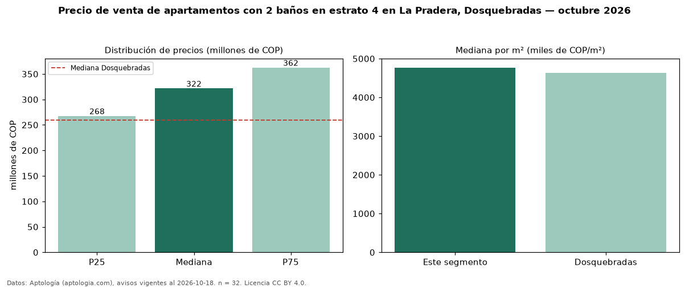

Precio de venta de apartamentos con 2 baños en estrato 4 en La Pradera, Dosquebradas — octubre 2026
En La Pradera, Dosquebradas, la mediana de precio de venta de apartamentos con 2 baños en estrato 4 es COP 322 millones, según 32 avisos vigentes. Frente a la mediana de los apartamentos en estrato 4 en venta de La Pradera (COP 288 millones, n = 46), queda 12 % por encima; este segmento reúne el 70 % de esos avisos. Por metro cuadrado, la mediana es COP 4,77 millones/m² (n = 32), 0 % por debajo de los apartamentos en estrato 4 en venta de La Pradera (COP 4,78 millones/m²). El área mediana anunciada es 64 m². El segmento con más oferta es el de 3 o más habitaciones (30 avisos, mediana COP 322 millones). La administración mediana declarada es COP 264.550 al mes (n = 16). La mediana de todos los apartamentos en venta de Dosquebradas es COP 260 millones (+24 % de diferencia). La mitad central de los avisos va de COP 268 millones a COP 362 millones (razón 1,4), una dispersión baja. Datos: Aptología (aptologia.com), CC BY 4.0 — https://www.aptologia.com/venta/dosquebradas/la-pradera. Archivos: PDF, CSV con las cifras y gráfica PNG.

| Avisos únicos | 32 |
|---|---|
| Percentil 25 | COP 267.500.000 |
| Mediana | COP 321.500.000 |
| Percentil 75 | COP 362.500.000 |
| Mediana por m² | COP 4.768.353 |
Fuente: avisos vigentes de portales inmobiliarios recopilados por Aptología, deduplicados (mínimo 30 avisos únicos por celda). Precios pedidos, no cerrados. Fecha: 2026-10-18.